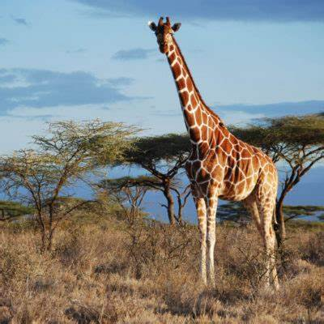

Document
cat
dog
giraffe
cats
The cat (Felis catus), commonly referred to as the domestic cat or house cat, is a small domesticatedcarnivorous mammal. It is the only domesticated species of the family Felidae. Recent advances in archaeology and genetics have shown that the domestication of the cat occurred in the Near East around 7500 BC. It is commonly kept as a house pet and farm cat, but also ranges freely as a feral cat avoiding human contact. Valued by humans for companionship and its ability to kill vermin, the cat's retractable claws are adapted to killing small prey like mice and rats. It has a strong, flexible body, quick reflexes, and sharp teeth, and its night vision and sense of smell are well developed. It is a social species, but a solitary hunter and a crepuscular predator. Cat communication includes vocalizations like meowing, purring, trilling, hissing, growling, and grunting as well as cat body language. It can hear sounds too faint or too high in frequency for human ears, such as those made by small mammals. It secretes and perceives pheromones. Female domestic cats can have kittens from spring to late autumn in temperate zones and throughout the year in equatorial regions, with litter sizes often ranging from two to five kittens. Domestic cats are bred and shown at events as registered pedigreed cats, a hobby known as cat fancy. Animal population control of cats may be achieved by spaying and neutering, but their proliferation and the abandonment of pets has resulted in large numbers of feral cats worldwide, contributing to the extinction of bird, mammal, and reptile species. As of 2017, the domestic cat was the second most popular pet in the United States, with 95.6 million cats owned and around 42 million households owning at least one cat. In the United Kingdom, 26% of adults have a cat, with an estimated population of 10.9 million pet cats as of 2020. As of 2021, there were an estimated 220 million owned and 480 million stray cats in the world.
dogs
The dog (Canis familiaris or Canis lupus familiaris) is adescendant of the wolf. Also called the domestic dog, it was domesticated from an extinct population of Pleistocene wolves over 14,000 years ago. The dog was the first species to be domesticated by humans. Experts estimate that hunter-gatherers domesticated dogs more than 15,000 years ago, which was before the development of agriculture. Due to their long association with humans, dogs have expanded to a large number of domestic individuals and gained the ability to thrive on a starch-rich diet that would be inadequate for other canids.[4] The dog has been selectively bred over millennia for various behaviors, sensory capabilities, and physical attributes.[5] Dog breeds vary widely in shape, size, and color. They perform many roles for humans, such as hunting, herding, pulling loads, protection, assisting police and the military, companionship, therapy, and aiding disabled people. Over the millennia, dogs became uniquely adapted to human behavior, and the human–canine bond has been a topic of frequent study. This influence on human society has given them the sobriquet of "man's best friend".
giraffe
The giraffe is a large African hoofed mammal belonging to the genus Giraffa. It is the tallest living terrestrial animal and the largest ruminant on Earth. Traditionally, giraffes have been thought of as one species, Giraffa camelopardalis, with nine subspecies. Most recently, researchers proposed dividing them into four extant species due to new research into their mitochondrial and nuclear DNA, and individual species can be distinguished by their fur coat patterns. Seven other extinct species of Giraffa are known from the fossil record. The giraffe's distinguishing characteristics are its extremely long neck and legs, horn-like ossicones, and spotted coat patterns. It is classified under the family Giraffidae, along with its closest extant relative, the okapi. Its scattered range extends from Chad in the north to South Africa in the south and from Niger in the west to Somalia in the east. Giraffes usually inhabit savannahs and woodlands. Their food source is leaves, fruits, and flowers of woody plants, primarily acacia species, which they browse at heights most other ground-based herbivores cannot reach. Lions, leopards, spotted hyenas, and African wild dogs may prey upon giraffes. Giraffes live in herds of related females and their offspring or bachelor herds of unrelated adult males but are gregarious and may gather in large groups. Males establish social hierarchies through "necking", combat bouts where the neck is used as a weapon. Dominant males gain mating access to females, which bear sole responsibility for rearing the young. The giraffe has intrigued various ancient and modern cultures for its peculiar appearance and has often been featured in paintings, books, and cartoons. It is classified by the International Union for Conservation of Nature (IUCN) as vulnerable to extinction. It has been extirpated from many parts of its former range. Giraffes are still found in many national parks and game reserves, but estimates as of 2016 indicate there are approximately 97,500 members of Giraffa in the wild. More than 1,600 were kept in zoos in 2010.
